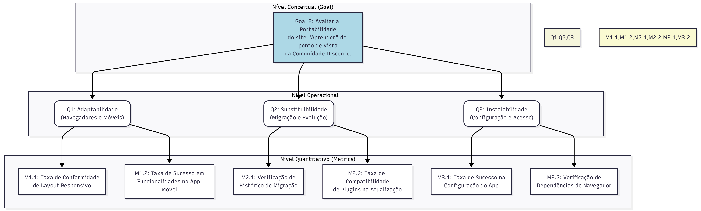

Medição de Portabilidade
Objetivo de Medição 2: Portabilidade
Tabela 2 - Objetivo de Medição 2: Portabilidade.
| Analisar | o site "Aprender". |
|---|---|
| Para o propósito de | Avaliar |
| Com respeito a | Portabilidade |
| Do ponto de vista da | Comunidade discente |
| No contexto da | Universidade de Brasília |
Perguntas e Hipóteses de Medição
Questão 1: (Adaptabilidade)
A tecnologia usada no desenvolvimento do site garante que ele funcione corretamente nos navegadores mais populares e até em dispositivos móveis?
- Hipótese 1.1 (H1.1): O layout responsivo do Aprender 3 se ajusta adequadamente a diferentes tamanhos de tela, e diferentes navegadores, garantindo sua usabilidade.
- Hipótese 1.2 (H1.2): O acesso via aplicativo oficial do Moodle oferece uma alternativa viável e funcional ao navegador, ampliando a portabilidade para o ecossistema móvel.
Questão 2: (Substituibilidade)
A arquitetura do Aprender 3 facilita a evolução do sistema, como a migração de dados de versões anteriores e a atualização de seus componentes?
- Hipótese 2.1 (H2.1): A migração bem-sucedida do Aprender para o Aprender 3 evidencia a capacidade da plataforma de ser substituída por versões mais novas, mantendo a continuidade dos serviços.
Questão 3: (Instalabilidade)
O acesso ao Aprender 3, seja via aplicativo móvel ou navegador, pode ser configurado sem a necessidade de conhecimentos técnicos avançados?
- Hipótese 3.1 (H3.1): A configuração do aplicativo Moodle para conectar-se ao site da UnB (
aprender3.unb.br) é um processo complexo, causando dificuldades para usuários não técnicos. - Hipótese 3.2 (H3.2): O sistema não impõe a instalação de plugins ou softwares específicos no navegador do usuário para seu funcionamento básico, garantindo a portabilidade entre diferentes máquinas e perfis de permissão.
Critérios de Julgamento da Portabilidade
Em conformidade com Estabelecimento de Critérios de Julgamento, são definidos os critérios para o julgamento final da característica Portabilidade como um todo. Os níveis de pontuação das métricas individuais (Excelente, Bom, Regular, Insatisfatório) serão agregados para fornecer um veredito final, conforme a tabela abaixo:
| Julgamento Final | Critério de Agregação |
|---|---|
| Aceitável | No mínimo 70% das métricas avaliadas obtiveram pontuação "Bom" ou "Excelente" E nenhuma métrica obteve pontuação "Insatisfatório". |
| Parcialmente aceitável | No mínimo 50% das métricas avaliadas obtiveram pontuação "Regular" ou superior, OU se alguma métrica-chave (ex: M1.1, M3.1) obteve pontuação "Insatisfatório". |
| Inaceitável | Mais de 30% das métricas avaliadas obtiveram pontuação "Insatisfatório", indicando falhas sistêmicas na portabilidade. |
Seleção das Métricas
Questão 1: (Adaptabilidade)
-
Métrica 1.1: Taxa de Conformidade de Layout Responsivo
- Definição: A porcentagem de páginas e funcionalidades essenciais que são renderizadas corretamente, sem quebras de layout ou perda de funcionalidade, em diferentes resoluções de tela e navegadores.
- Fórmula: (% Conformidade) = (Nº de páginas/funcionalidades conformes / Nº total de páginas/funcionalidades testadas) x 100
- Propósito: Garantir que a experiência do usuário seja consistente e funcional, independentemente do dispositivo ou navegador utilizado.
- Critérios de Julgamento:
Excelente Bom Regular Insatisfatório > 90% de conformidade 75% a 90% de conformidade 60% a 74% de conformidade < 60% de conformidade -
Métrica 1.2: Taxa de Sucesso em Funcionalidades no App Móvel
- Definição: A porcentagem de tarefas essenciais que podem ser concluídas com sucesso através do aplicativo oficial do Moodle.
- Fórmula: (% Sucesso no App) = (Nº de tarefas bem-sucedidas no App / Nº total de tarefas testadas) x 100
- Propósito: Validar se o aplicativo móvel é uma alternativa viável e funcional ao navegador, confirmando a portabilidade para o ecossistema móvel.
- Critérios de Julgamento:
Excelente Bom Regular Insatisfatório > 90% de sucesso 75% a 90% de sucesso 60% a 74% de sucesso < 60% de sucesso
Questão 2: (Substituibilidade)
-
Métrica 2.1: Verificação de Histórico de Migração
- Definição: Uma métrica binária (Sim/Não) que verifica se a plataforma já passou por um processo de atualização de versão majoritária com sucesso.
- Fórmula: N/A (Verificação qualitativa)
- Propósito: Confirmar, com base em evidências passadas, a capacidade da plataforma de ser substituída por versões mais novas.
- Critérios de Julgamento:
Hipótese Validada Hipótese Refutada Sim (evidência encontrada) Não (nenhuma evidência)
Questão 3: (Instalabilidade)
-
Métrica 3.1: Taxa de Sucesso na Configuração do App por Novos Usuários
- Definição: A porcentagem de usuários sem experiência prévia que conseguem instalar e configurar o aplicativo Moodle para acessar o Aprender 3 sem assistência.
- Fórmula: (% Sucesso na Configuração) = (Nº de usuários bem-sucedidos / Nº total de usuários testados) x 100
- Propósito: Medir a complexidade real do processo de configuração inicial para um usuário comum, avaliando a portabilidade da instalação.
- Critérios de Julgamento:
Excelente Bom Regular Insatisfatório > 90% de sucesso 75% a 90% de sucesso 60% a 74% de sucesso < 60% de sucesso -
Métrica 3.2: Verificação de Dependências de Navegador
- Definição: Uma métrica binária (Sim/Não) que verifica se o funcionamento básico do Aprender 3 requer a instalação de qualquer software, plugin ou extensão de navegador de terceiros.
- Fórmula: N/A (Verificação qualitativa)
- Propósito: Garantir que a plataforma seja facilmente portável entre diferentes computadores (pessoais, laboratórios, etc.) sem barreiras de instalação.
- Critérios de Julgamento:
Excelente (Portável) Insatisfatório (Não Portável) Sim (nenhuma dependência) Não (requer instalação)
Diagrama GQM - (Representação Estrutural)
